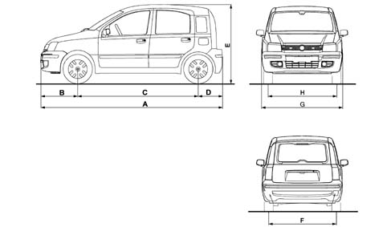

VEHICLE DIMENSIONS
- Path
- Technical Data > Project description and specifications > VEHICLE DIMENSIONS
- Kind
- technical data / specifications
- Applies to
- all engines; all production periods
- Interactive page
- https://sloeber94.github.io/elrnDB-fPnd/en/#/2751165
Applies to: all engines; all production periods
1.1 8V | 1.2 8V | 1.2 8V 4x4 | 1.2 8V 4x4 Climbing | 1.3 Multijet | 1.3 Multijet 4X4 SUV | |
|---|---|---|---|---|---|---|
A (mm) | 3538 | 3538 | 3538 | 3574 | 3538 | 3581 |
B (mm) | 713 | 713 | 713 | 721 | 713 | 734 |
C (mm) | 2299 | 2299 | 2305 | 2305 | 2299 | 2305 |
D (mm) | 526 | 526 | 520 | 548 | 526 | 542 |
E (mm) | 1578 (**) | 1578 (**) | 1630 (°) | 1632 | 1578 (**) | 1643 (***) |
F (mm) | 1357 (*) | 1357 (*) | 1358 (*) | 1358 (*) | 1357 (*) | 1382 |
G (mm) | 1578 | 1578 | 1578 (°°) | 1605 | 1578 | 1611 |
H (mm) | 1366 (*) | 1366 (*) | 1366 (*) | 1366 (*) | 1366 (*) | 1387 |

Capacity with vehicle unladen (V.D.A. standards) in dm3
One-piece and split rear seat | Sliding rear seat | |
|---|---|---|
Boot closed | 206 200 (°) | 176 (*) 170 (*)(°) 235 (**) 230 (**)(°) |
Boot waist level with rear backrest folded over | 490 485 (°) | 416 410 (°) |
Max. at roof with rear backrest lowered | 860 855 (°) | 786 780 (°) |
Max at roof with rear backrest lowered (with sun-roof) | 815 810 (°) | 741 735 (°) |